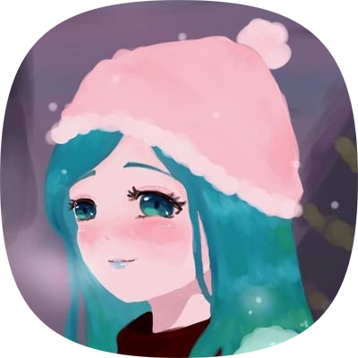
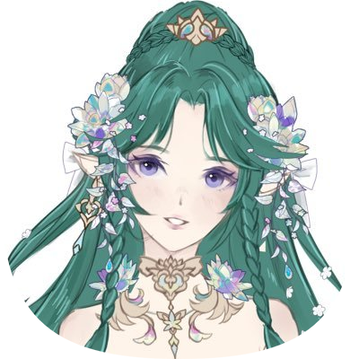
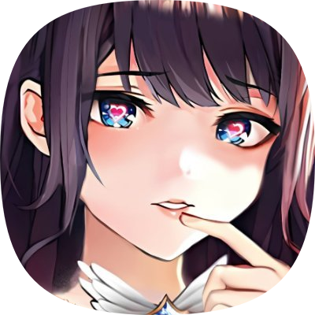

「VTresMarias - V三人のマリア - 」 was provisioned through a fanart from thebelovedmoon (the First Maria🍃) last 27 Dec 2022 as his way of appreciating his fellow VTubers -- Aura Ostara (the Second Maria🪷) and Hina Oujo (the Third Maria🌸).
this VTuber Collective has become the basis for the continuous support of the Marias throughout their VTubing career -- even beyond their hiatus.
in terms of lore, the Marias' story is culminated -- with the majority being the First Maria🍃's as it encompasses on how she was able to overcome the challenges to complete her underlying mission.
meet the Marias
info as of 7 Apr 2024

Mother Agatha, the First Maria🍃
Mother Agatha was once a beloved Mother before everything fell apart due to the brink of winter. she was given a mission from the Grand Lady upon her resurrection to find those who will be a part of her life forever.
behind the character is thebelovedmoon -- also known as 💚🍃Aga-chuu💗🌸 -- the founder of this VTuber Collective. he initially used this within the Horror Shop Games community, but this has evolved over using it as his VTuber presence in order to represent such community.
he specializes in graphics and PR, as well as websites and programming. his current ventures (alongside this) include #MamaNyoSquad, ReactSquad, and AgaASMR (aka Aga's ASMR Garden).

Aura Ostara, the Second Maria🪷
Aura Ostara represents the Celestial Nymph Guardian who aims to protect her Nimbisouls by all means necessary. she was an everyday girl before that one moment changes her life forever.
behind the character, she is a lively VTuber who dreams to connect with everyone that she meets throughout the way. she mostly streams Magicka and Mario Kart, but she also hosts zatsudan whenever she has time.
as of 19 Oct 2022, she's currently on indefinite hiatus; and the future remains uncertain upon her return to her VTubing career.

Hina Oujo, the Third Maria🌸
Hina Oujo is an elegant queen from a faraway land who vows to serve her Chuu-nins well. she has everything under her disposal, but deep inside, she needs someone who will make her feel whole after what seems to be her whole heap of loneliness.
behind the character, she's formerly known as Suzu Puyotori and HinaSukii -- where the former has renamed to Emii Shion. she's a talented artist who has made waves over X before she debuted 3 Jul 2022. she typically enjoys art and zatsudan, and majorly plays League of Legends and Apex Legends -- among other things.
as of 28 Jan 2024, she has decided to put everything behind as her socials are closed -- forever. but her soul will always stay with the Collective for the sake of the future. 💗the Third Maria will always stay with us forever.🌸
our Core Values
「Universality without Borders」
our primary aim is to be open to all walks of life, whether it would be behind the screen or in front of a real person.
we do not permit any forms of negativity within our community and beyond. we strive to protect and support each other through trying times and not bring them down.
「Acceptance without Comprehension」
accompanying our aim for universality is our advocacy to accept everyone's flaws. our community strives on making sure everyone is widely accepted regardless of their nature.
but in order to maintain that acceptance, we have put additional measures to further strengthen our bond and to stay true to our promise of uniting the communities together as one.
web license
our source code can be directly accessed via GitHub and is licensed under MIT. you can take a look at the resources here: